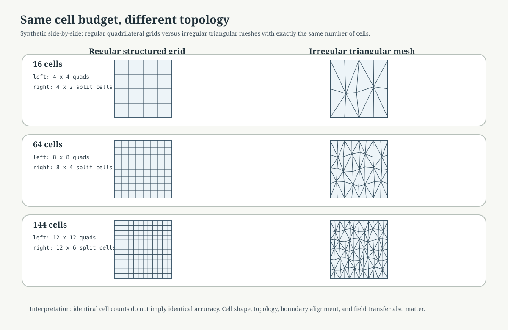
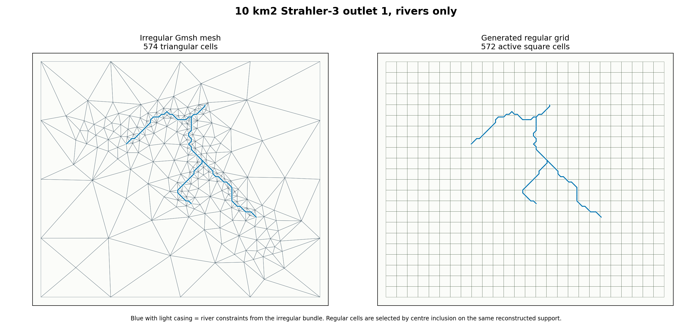
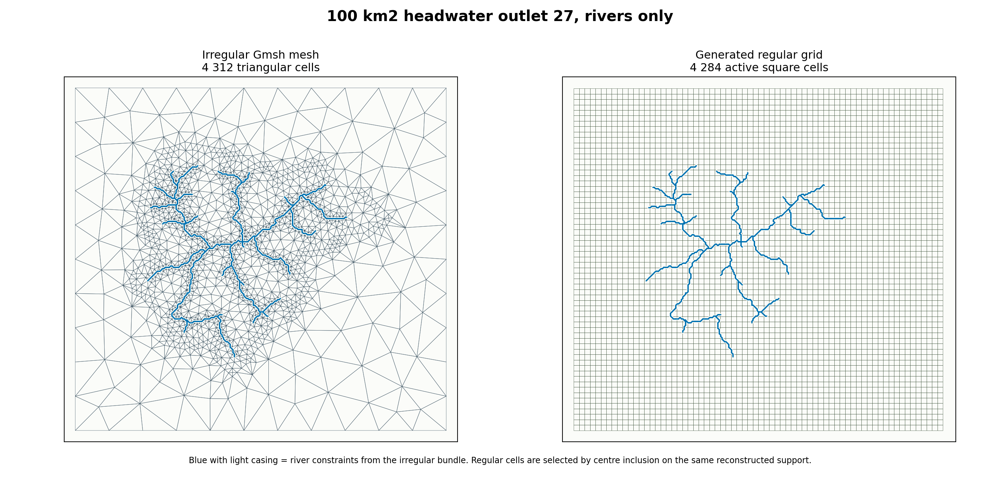
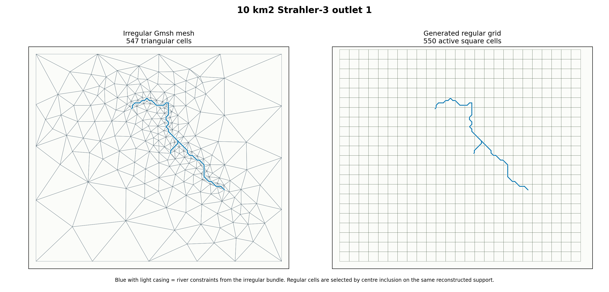
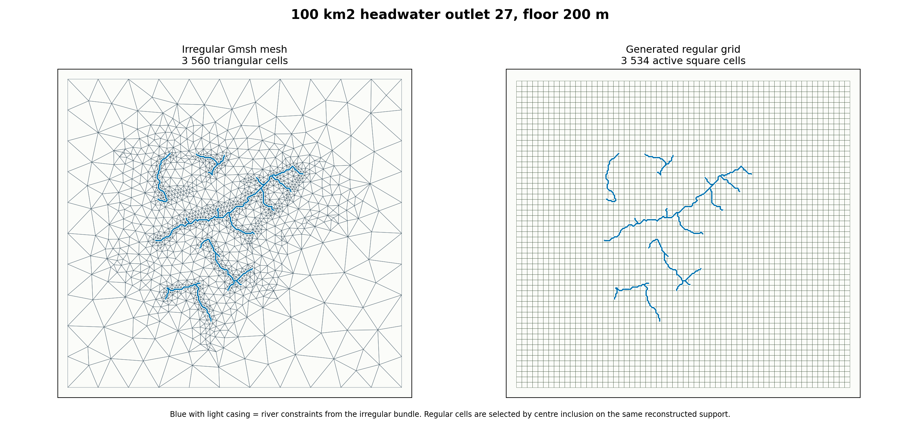
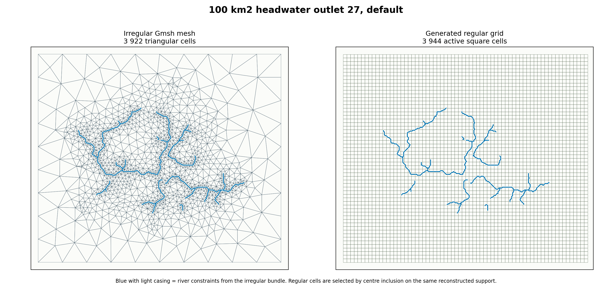
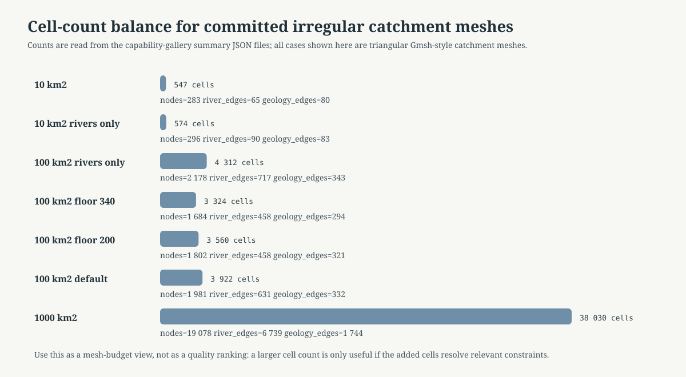
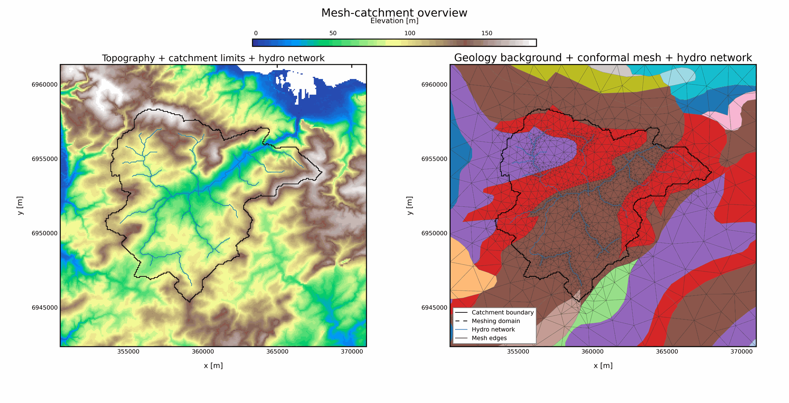

Regular And Irregular Mesh Cell Budgets#
Purpose#
This page gives a visual entry point for comparing regular and irregular mesh families.
It answers two different questions that should not be mixed:
What does “same number of cells” mean when one mesh is regular and the other is irregular?
What do the currently versioned HydroModPy catchment meshes look like in terms of cell-count budget?
The first question is answered with a controlled synthetic figure. The second question is answered with committed HydroModPy mesh-gallery artifacts.
Same Cell Count, Different Topology#
The figure below is intentionally synthetic. It is not a HydroModPy production mesh. Its role is to make one point visible before opening basin-specific figures:
equal cell count does not mean equal discretization.
{kind=link}

Fig. 40 Each row uses the same number of cells on the left and right. The left side uses structured quadrilateral cells. The right side uses triangular cells with irregular internal vertices. The cell budget is identical, but topology, edge orientation, neighbour structure, and boundary alignment are different.#
Cell budget |
Regular example |
Irregular example |
Main lesson |
|---|---|---|---|
16 cells |
4 x 4 quadrilateral grid |
16 triangular cells |
Coarse comparison; topology dominates. |
64 cells |
8 x 8 quadrilateral grid |
64 triangular cells |
Same count, different neighbour graph. |
144 cells |
12 x 12 quadrilateral grid |
144 triangular cells |
More cells do not remove support semantics. |
Reading rule:
use equal cell counts to control memory and rough solve size;
do not use equal cell counts as a guarantee of equal accuracy;
always report cell type, boundary alignment, field transfer, and quality metrics alongside cell count.
River-Only Constraint Figures#
The clearest figures for reading the river network are the rivers_only
bundles. They keep the catchment support and the hydrographic constraints, but
remove geology as an active meshing constraint. These cases are therefore a
better visual reference when the question is:
how does the same river network look on an irregular constrained mesh and on a regular grid with a similar number of active cells?
{kind=link}

Fig. 41 Irregular reference: 574 triangular cells. Generated regular grid:
572 active square cells. Difference: -2 cells. River edges:
90.#
{kind=link}

Fig. 42 Irregular reference: 4312 triangular cells. Generated regular
grid: 4284 active square cells. Difference: -28 cells. River
edges: 717.#
Case |
Irregular cells |
Regular cells |
Difference |
Regular cell size |
|---|---|---|---|---|
10 km2, rivers only |
574 |
572 |
-2 |
296 m |
100 km2, rivers only |
4312 |
4284 |
-28 |
301 m |
Read these figures first when the objective is network continuity. The geology+rivers figures below remain useful, but they mix two sources of local refinement: hydrography and geological interfaces.
Geology And Rivers Constraint Figures#
The figures below use the same comparison method on bundles where geology and rivers both influenced the irregular mesh. The real committed HydroModPy mesh bundle is used as the irregular reference, the support is reconstructed from the triangular cells, then a regular square grid is generated with an active-cell count close to the irregular cell count.
This is a documentation comparison, not yet a production regular-grid bundle. It is still useful because it makes the geometry trade-off visible on the same case and the same plotting extent.
{kind=link}

Fig. 43 Irregular reference: 547 triangular cells. Generated regular grid:
550 active square cells. Difference: +3 cells.#
{kind=link}

Fig. 44 Irregular reference: 3560 triangular cells. Generated regular
grid: 3534 active square cells. Difference: -26 cells.#
{kind=link}

Fig. 45 Irregular reference: 3922 triangular cells. Generated regular
grid: 3944 active square cells. Difference: +22 cells.#
Case |
Irregular cells |
Regular cells |
Difference |
Regular cell size |
|---|---|---|---|---|
10 km2, Strahler-3 outlet 1 |
547 |
550 |
+3 |
303 m |
100 km2, outlet 27, floor 200 m |
3560 |
3534 |
-26 |
331 m |
100 km2, outlet 27, default |
3922 |
3944 |
+22 |
292 m |
Read these figures carefully:
the irregular mesh uses triangles that can refine near constraints;
the regular grid keeps square cells and can only approximate the same river traces by crossing cells;
matching the number of cells controls model size but not geometric fidelity;
the blue river constraints are overlaid on both panels so the loss of boundary alignment is immediately visible.
Versioned HydroModPy Mesh Budgets#
The next figure is not synthetic. It reads cell-count metrics from committed capability-gallery summary JSON files.
{kind=link}

Fig. 46 These are irregular catchment meshes from the mesh gallery. They should be read as current evidence for mesh-size budgets, not as a regular-versus- irregular controlled experiment.#
Versioned case |
Nodes |
Cells |
River edges |
Geology interfaces |
|---|---|---|---|---|
10 km2, outlet 1, geology + rivers |
283 |
547 |
65 |
80 |
10 km2, outlet 1, rivers only |
296 |
574 |
90 |
83 |
100 km2, outlet 27, rivers only |
2178 |
4312 |
717 |
343 |
100 km2, outlet 27, floor 340 m / target 200 m |
1684 |
3324 |
458 |
294 |
100 km2, outlet 27, floor 200 m / target 200 m |
1802 |
3560 |
458 |
321 |
100 km2, outlet 27, default geology + rivers |
1981 |
3922 |
631 |
332 |
1000 km2, outlet 2, geology + rivers |
19078 |
38030 |
6739 |
1744 |
The important reading is not “more cells is better”. The useful reading is:
which constraints were active;
how many cells were needed to represent them;
how much of the cell budget is driven by rivers, geology, and basin boundary;
whether the added cells are located where the scientific question needs resolution.
For the rivers_only rows, the geology-interface count is only a diagnostic
computed after the mesh is built. It should not be read as an active geology
constraint.
Controlled Size-Floor Pair#
The 100 km2 outlet-27 pair below is useful because the two committed cases keep the same outlet and the same river target, but change the global size floor.

Cells: 3560. River edges: 458. Geology interfaces: 321.
Cells: 3324. River edges: 458. Geology interfaces: 294.
This is currently the best committed example for explaining mesh-size effects:
the river target remains
200 min both cases;the global floor changes;
the realized cell count and interface count change;
the visual difference should therefore be read as a size-floor effect before it is read as a physics or solver effect.
Existing Gallery Pages To Reuse#
The page above is a short guided view. Use the gallery pages for the complete case records:
What Is Still Missing For The Ideal Comparison#
The page now has complete paired figures for two river-only cases and three geology+rivers cases. What is still missing is the production-grade version of the same idea.
The ideal capability-gallery family would compare, on the same basin and the same plotting extent:
a structured regular grid;
an irregular catchment-conformal mesh;
several target cell budgets;
matched or near-matched active-cell counts.
The controlled production protocol should be:
choose one basin support, preferably Nancon or one 100 km2 headwater case;
choose target budgets, for example about
500,2000,8000cells;generate regular structured grids as real reusable bundles whose active cells match those budgets as closely as possible;
generate irregular Gmsh meshes by searching the global size parameters until cell counts are close to the same budgets;
render each pair on the same extent, first with hydrography only, then with hydrography and geology overlays;
publish a summary table with cells, nodes, river edges, geology interfaces, area percentiles, and quality percentiles;
only then use the paired supports for solver comparisons.
That future page should be a new capability-gallery case family, not only a hand-written note. The reason is reproducibility: cell counts and figures should be regenerated from committed mesh bundles and summary JSON, not edited manually.
Current Generation Scripts#
The figures on this page are generated by:
docs/source/theory/mesh/render_mesh_comparison_assets.pydocs/source/theory/mesh/render_regular_irregular_case_assets.py
The first script creates the synthetic same-cell-count diagrams. The second script reconstructs regular grids from committed irregular mesh bundles and writes:
docs/source/_static/theory/mesh/regular_irregular_cases/*.pngdocs/source/_static/theory/mesh/regular_irregular_cases/regular_irregular_case_summary.json